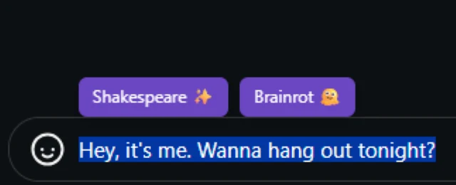

On the Chrome Web Store
AI Text Converter
Highlight text in any input, textarea or rich-text box and rewrite it in place, in Shakespearean English or in "brainrot" for now. The extension is JavaScript. A small Python FastAPI service I wrote sends the text to Google Gemini and returns the rewrite.
- JavaScript
- Chrome Extensions API
- Python
- FastAPI
- Gemini API